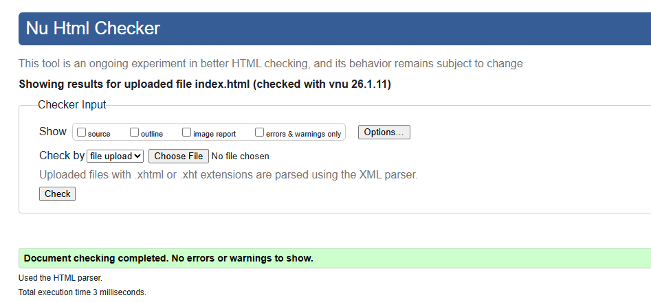
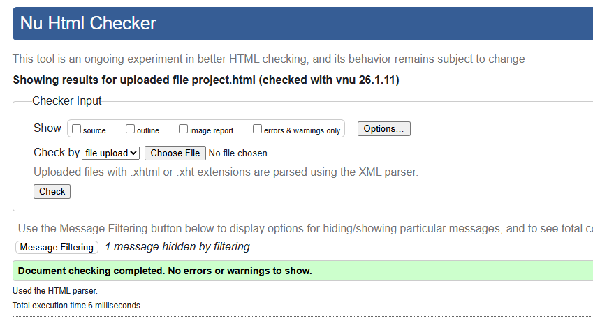
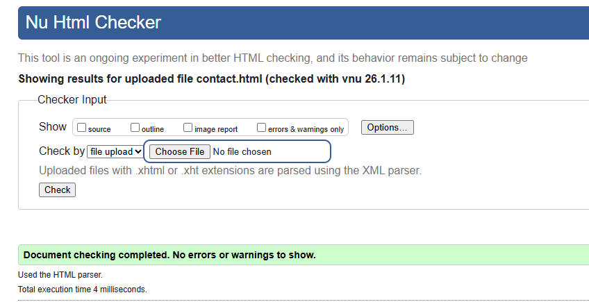
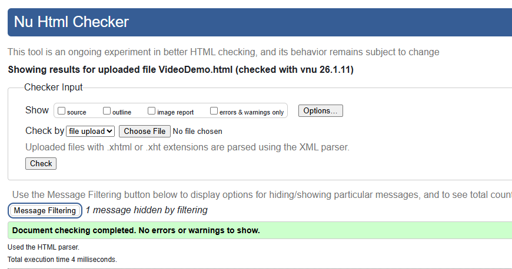
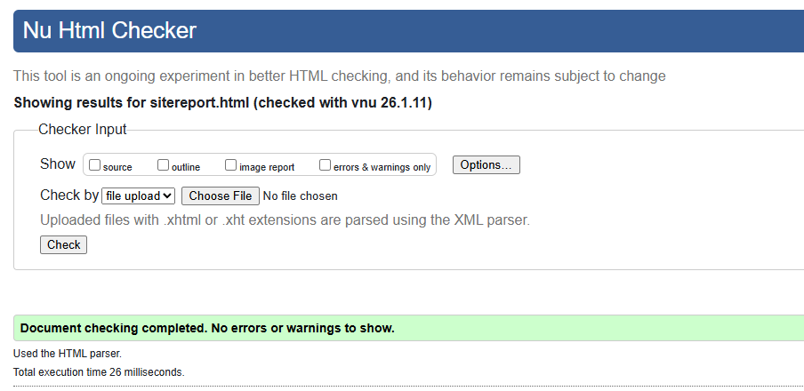

Site Development Report
1. Learning Experience & Reflection
This portfoli project has been very valuable learning Experience into modern web development. While beginning this module, i was little short handed on experience with HTML and CSS, but throughout active particaipation and involvement on tutorials and lectures, gaining practical skills in creating responsive, semantic websites.
One of my biggest challenges was understanding CSS Grid and flexbox because both of the layout system carries different usability. Through various uses and errors, i realized that flexbox works best for one-dimensional layouts (like the navigation bar) and Grid is better at two-dimensional layouts(like my project page). This experimentation helped me excel my technical implementation.
The responsive design aspects was particularly more interesting and fun. Initially Getting frustrated from seeing my site breakdown on mobile devices to actually make it work by implementing the hamburger manu using pure (CSS) checkbox hack was really eye opening. Visualizing my ideas truning into life through code was a little challenging but definitely more rewarding.
Working with Git and GitHub throughout the module and competition of this project helped me understand version control and importance of regular commits. I learnt to write and push meaningful commits messages that describes the changes i made. This experience will be very invaluable for further collaborative projects.
The debugging process was the most challenging among all the contents of the project. The debugging process taught me patience and logical problem-solving skill. I learned to use browser DevTools to alayze and inspect the cascade while my CSS animation was not working. I used W3C validatorrs to help me write cleaner and standards-compliant code.
Overall, this project transformed my understanding of web development from abstract concepts to practical, working knowledge. I now feel confident building responsive websites from scratch and have a solid foundation to build upon in future modules.
2. Development Process
Day 1-2: Planning & Setup
First 2 days of my project, i began by drawing wireframes and a plan for all the five pages. This wireframes helped me visualize how i want my layout to be before writing any code. I set up my GitHub repository and craeted basic file structure(HTML files, CSS file, images folder).
Day 3-4: Core Development
I started with the home page, implementing the hero section and navigation. Getting the semantic HTML structure right from the beginning was crucial. I focused on using proper tags like <nav>, <main>, <section>, and <article> instead of generic divs.
Day 5-6: Responsive Design
I added media queries and built the hamburger menu. Testing on multiple screen sizes using Chrome DevTools helped me refine the breakpoints. The mobile view required significant adjustments to padding, font sizes, and layout.
Day 7-8: Polish & Validation
I added CSS animations, refined spacing, and validated all pages. Fixed numerous validation errors and improved code quality. Created the video demonstration and finalized all content.
3. Design Decisions
Color Scheme
Background
Text Primary
Text Secondary
Accent
As a individual who kind of hates working with colors, i chose a minimalist color bracket with neutral tones to create a clean and professional look. The light grey background(#f5f5f5) reduces eye tension compare to the pure white color and the dark text #333333 provides easy readability. This color schemes was influencedby modern portfolio sited likr Britanny Chiang's portfolio, which showcases actual content over flashy colors.
Typography
I used the system font stack (Times new roman as fallback) for fast loading times. Headings use larger sizes (2.5-3rem) with reduced line-height for impact, while body text uses 1rem with 1.6 line-height for comfortable reading. Font weights vary between 400 (regular), 500 (medium), and 700 (bold) to create visual hierarchy.
Layout & Spacing
I followed the 8px spacing system (0.5rem, 1rem, 1.5rem, 2rem, etc.) for consistent spacing throughout. Maximum content width of 1200-1400px ensures readability on large screens. Generous padding (3-5%) on mobile prevents content from touching screen edges.
Influences
My design was influenced by several sources:
- Minimalist portfolios on Dribbble - Inspired the clean aesthetic
- Material Design principles - Card shadows and hover elevations
- Modern landing pages - Hero section layout and CTA placement
4. Technical Implementation
HTML Structure
As per the assignment requirement, all the pages follow semantic HTML5 structure with proper use of HTML tages like <header>, <nav>, <main>, <section>, <article>, and <footer> tags. All these tags improves quality of the code, accessibility and SEO compared to suing basic divs.
CSS Grid Layout
The project page uses CSS Grid with grid-template-columns: repeat(auto-fit, minmax(350px, 1fr)).
This helps creating a responsove layout that auto adjust colum count based on the width of the media devices, such as the project in project.html page is displayed in 3 columns on desktop, 2 on tablets and 1 on m
Flexbox Usage
Navigation, buttons, and card content use Flexbox for alignment. The navigation uses
justify-content: space-between to push the logo left and menu right. Card content
uses flex-direction: column with flex: 1 to fill available space.
CSS Animations
I implemented several animations:
- Greeting carousel: Sequential fade-in with translateY using animation-delay
- Project cards: Staggered entrance with fadeInUp keyframes
- Contact items: Sequential reveal with 0.3s-0.5s delays
- Hover effects: Transform translateY and box-shadow transitions
Responsive Design
Mobile breakpoint at 768px using @media (max-width: 768px). The hamburger menu
uses the CSS checkbox hack - an <input type="checkbox"> with sibling selectors to toggle
the navigation visibility without JavaScript.
Accessibility Features
- Semantic HTML for screen readers
- Alt text on all images
- Sufficient color contrast (WCAG AA compliant)
- Focus states on interactive elements
- Keyboard navigation support
5. Challenges & Solutions
Challenge 1: Hamburger Menu Without JavaScript
Problem: Needed a working mobile menu without JavaScript.
Solution: Used the CSS checkbox hack with <input type="checkbox">
and the :checked pseudo-class to toggle menu visibility. Styled the label as
the hamburger icon using three span elements.
Challenge 2: CSS Grid Not Working as Expected
Problem: Project cards weren't aligning properly in the grid.
Solution: Discovered I was missing display: grid on the container.
Also learned that auto-fit vs auto-fill affects how empty space
is handled. Used Chrome DevTools Grid Inspector to visualize the grid lines.
Challenge 2: CSS Grid Not Working as Expected
Problem: Project cards weren't aligning properly in the grid.
Solution: Discovered I was missing display: grid on the container.
Also learned that auto-fit vs auto-fill affects how empty space
is handled. Used Chrome DevTools Grid Inspector to visualize the grid lines.
Challenge 3: Animations Not Smooth on Mobile
Problem: Animations were janky on mobile devices.
Solution: Reduced animation complexity on mobile, used transform
and opacity (GPU-accelerated properties) instead of animating width/height.
Added will-change property for frequently animated elements.
Challenge 4: Validation Errors
Problem: Multiple HTML validation errors on first attempt.
Solution: Fixed unclosed tags, removed duplicate IDs, ensured proper nesting of elements. Learned to validate frequently during development rather than at the end.
6. Validation Results
All pages and CSS have been validated using W3C validators with no errors:
HTML Validation (W3C Markup Validator)
index.html
✓ No errors or warnings
project.html
✓ No errors or warnings
contact.html
✓ No errors or warnings
sitereport.html
✓ No errors or warnings
videoDemo.html
✓ No errors or warnings
CSS Validation (W3C CSS Validator)
style.css

✓ No errors found
Note: Screenshots taken on January 11, 2026. Validators used: validator.w3.org (HTML) and jigsaw.w3.org/css-validator (CSS).
7. Video Demonstration
A 2-3 minute video demonstration of the portfolio is available, showcasing all five pages, responsive design features, and explaining design and technical decisions.
Video URL: https://youtu.be/_VIDEO_ID
Alternative: View on Video Demo page
The video covers:
- Tour of all five pages (index, project, contact, sitereport, videoDemo)
- Responsive design demonstration with browser resizing
- Hamburger menu functionality on mobile
- CSS Grid implementation on project page
- Animation effects and hover interactions
- Design rationale and color scheme choices
- Technical highlights and coding approach
8. References & Acknowledgments
Learning Resources
- CSS-Tricks (2024) A Complete Guide to CSS Grid. Available at: https://css-tricks.com/snippets/css/complete-guide-grid/ (Accessed: 15 December 2024).
- MDN Web Docs (2024) CSS Flexible Box Layout. Available at: https://developer.mozilla.org/en-US/docs/Web/CSS/CSS_Flexible_Box_Layout (Accessed: 18 December 2024).
- W3C (2024) HTML5: A vocabulary and associated APIs for HTML and XHTML. Available at: https://www.w3.org/TR/html5/ (Accessed: 20 December 2024).
Design Inspiration
- Dribbble (2024) Portfolio website designs. Available at: https://dribbble.com/tags/portfolio (Accessed: 10 December 2024).
- Coolors.co (2024) Color palette generator. Used to explore color combinations. Available at: https://coolors.co/ (Accessed: 12 December 2024).
Code Snippets
All code was written by myself and it is so based on module content and documentation research. No external code libraries or frameworks were used.
AI Assistance
I used Claude AI (Anthropic, 2025) as a learning assistant to help understand concepts and debug issues. Specific assistance included:
- Understanding CSS Grid syntax and layout patterns
- Debugging validation errors and understanding error messages
- Learning best practices for semantic HTML structure
- Troubleshooting animation timing and keyframe syntax
All final code was written and understood by myself. AI was used as a teaching tool, similar to consulting documentation or a tutor.
Anthropic (2025) Claude AI. Available at: https://claude.ai (Accessed: January 2025).
Images
All images used are either:
- Personal photographs taken by myself
- Icons created using CSS or Unicode characters
- All the projects shown are my individual projects